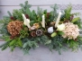
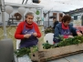
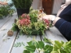
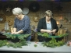
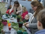
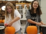
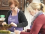
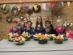
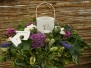

Fotoalbum Fotoalbum Buurtzorg 19 december 2018 16 Foto's Kerstkeuze workshop 17 december 15 Foto's  Kerstkeuze 15 december 15 Foto's  Kerst-keuze 10 december 13 Foto's Kerstkrans 8 december 19 Foto's  Herfstworkshop 18 10 Foto's Sint maarten 1 Foto's  Buurtzorg kerst 2017 19 Foto's  Kerst 16 dec. Verloskundigenpraktijk Lisserbroek 29 Foto's  Uitholfestijn 19 Foto's  Marijke 18 Foto's  Rosemarie Partijtje 17 Foto's  Arianne groep 13 Foto's